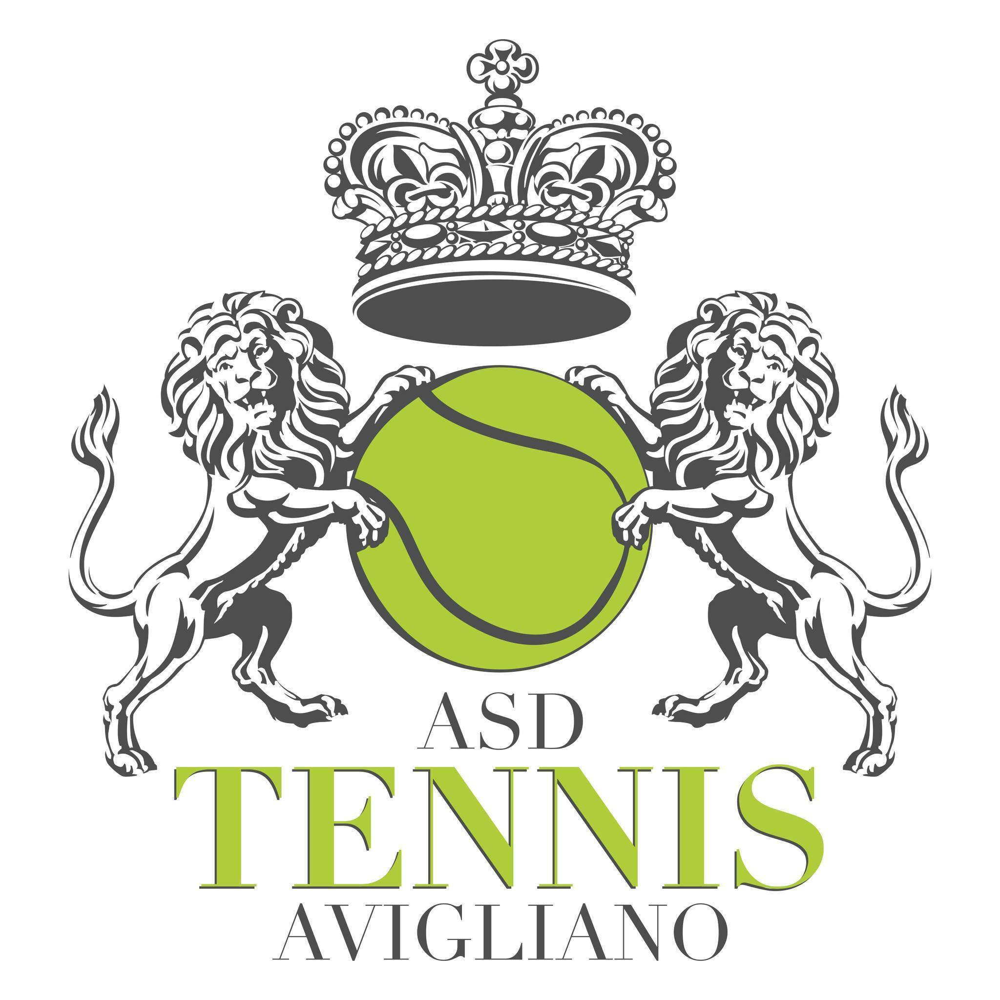

Chi Sono
Ciao! Mi chiamo Andrea Iannielli e sono nato a Potenza il 20/11/07. Mi appassiona molto il tennis, ma anche il calcio. Nella mia vita ho avuto molte esperienze che mi hanno migliorato come persona.
I Miei Hobby
- Tennis
- Calcio
- Palestra
Dedico il mio tempo libero a questi hobby perché mi permettono di rilassarmi e non pensare ad altro, e di migliorare la mia salute fisica mantenendomi in forma.
I Miei Obiettivi
Nel futuro, spero di diventare un tennista professionista. Questo obiettivo è importante per me perché rappresenta un sogno che ho da molti anni.
Mi impegno ogni giorno per avvicinarmi sempre di più a questo obiettivo, affrontando le sfide e imparando nuove competenze lungo il percorso.
Istruzione
Sto studiando all'Itis di Potenza per diventare un perito informatico.
Durante il mio percorso scolastico ho sviluppato molte competenze, e queste sono le materie che studiamo:
- Educazione Civica
- Informatica
- Italiano
- Inglese
- Matematica
- Religione
- Educazione Fisica
- Sistemi e Reti
- Storia
- Tpsit
- Telecomunicazioni

Asd Tennis Avigliano
Attualmente gioco nell'Asd tennis Avigliano da 10 anni, da poco giochiamo in modo agonistico e quest'anno siamo diventati campioni regionali.
- Storia
- Titoli
Un paio di racchette di legno ed un muraglione di cemento... così ha inizio la storia del tennis ad Avigliano.
Alla fine degli anni settanta anche in un piccolo paese di provincia si sentono gli echi delle imprese di Panatta e compagni, quando il tennis era ancora un caso mediatico.
Il TC Avigliano è riuscito ad ottenere ben 38 titoli regionali, collocandosi al 33° posto a livello nazionale per le categorie giovanili, e al 67° per il livello assoluto.
Viaggi
Ho avuto la fortuna di viaggiare in diverse città, e queste sono quelle che mi hanno colpito di più.
- Roma
- Milano
- Napoli
Galleria
Alcune foto che documentano uno dei miei momenti più importanti della mia vita ovvero il torneo di tennis Master 1000 a roma che si svolge ogni anno: